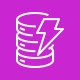
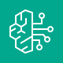

01 · 고정 인프라는 나중에
MVP는 S3·DynamoDB와 요청 기반 Lambda부터 시작합니다. 그래프 DB와 전용 검색을 추가하기 전에 검색량과 관계 탐색 필요성을 측정합니다.
문서, 소스코드, 티켓과 대화의 관계를 연결하는 오픈소스 프로젝트. 작은 MVP로 시작하고 필요할 때 온톨로지와 검색을 확장합니다.
승인 워크플로 없이 수집·저장·조회부터 시작합니다.
외부 SaaS · 고객 네트워크
연결 범위는 권한별로 제한


GitHub App / OAuth
개인 장기 토큰 지양





온톨로지 추론·그래프 탐색·의미 검색이 필요할 때 확장합니다.
외부 SaaS · 고객 네트워크
접근 정책 · 출처 유지


다이어그램은 목표이며, 저장소의 현재 동작과 구분합니다.
← 표를 좌우로 스크롤하여 현재 범위를 확인하세요 →
| 기능 | 상태 | 현재 범위 |
|---|---|---|
| GitHub · GitLab 공개 PR/MR | 로컬 구현 | 수집, S3 저장, 원본 재검증 검색 · LocalStack |
| GitLab.com 비공개 MR | 로컬 구현 | OAuth PKCE, 프로젝트별 수집, 요청자 원본 재확인 검색 |
| GitHub 비공개 PR · Teams · Linear | 미리보기 | OAuth / GitHub App 연결 및 사용자별 화면 미리보기 |
| Jira · Confluence · 자체 호스팅 · 소스 파일 | 예정 | 연결, 원본 권한 동기화와 수집 미구현 |
| AWS 배포 · COA · 운영용 권한 모델 | 예정 | IaC, 테넌트 격리, 원본 ACL, 감사와 운영 검증 필요 |
월 총액은 리전과 사용량을 정한 뒤 AWS 요금 계산기로 산정합니다.
MVP는 S3·DynamoDB와 요청 기반 Lambda부터 시작합니다. 그래프 DB와 전용 검색을 추가하기 전에 검색량과 관계 탐색 필요성을 측정합니다.
Neptune Serverless는 인스턴스별 최소 1 NCU입니다. OpenSearch Serverless NextGen은 0 OCU를 설정할 수 있습니다. COA의 현재 기본 최소값은 2 OCU이므로 실제 배포 설정과 저장 비용·재기동 지연을 확인합니다.
변경분만 수집하고 임베딩·모델 호출을 배치합니다. 예산 알림, 로그 보존 기간, NAT·엔드포인트, KMS·비밀 저장 비용도 함께 계산합니다.
가격은 배포 리전, 트래픽, 저장량, 고가용성, 데이터 전송과 모델 사용량에 따라 달라집니다. 이 문서의 다이어그램만으로 월 요금을 확정할 수 없습니다.
로컬 LocalStack에서 커넥터와 공개 검색, GitLab 비공개 MR의 요청자별 재확인 검색을 개발합니다. 운영 환경용으로 공개하지 않습니다.
테넌트·사용자 인증, 원본 권한과 삭제 전파, 비밀 보호, 감사 로그와 실제 서비스 통합 테스트를 구현해야 합니다.
테스트와 백엔드 변이 검사 결과는 GitHub Actions를 확인하세요. UI 변이 검사와 추가 커넥터는 이슈로 관리합니다.